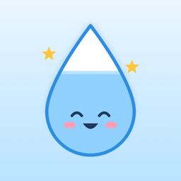

방울이
한 모금 물 기록 · Bangul: Sip Water Tracker
물을 mL가 아니라 "모금"으로 세는 가장 쉬운 물 기록이에요. 동작 버튼, 잠금화면, 제어 센터, 위젯, Siri, 애플 워치에서 앱을 열지 않고 한 모금을 기록할 수 있어요. 하루 목표를 채우면 방울이가 웃고 달력에 스티커가 붙어요.
문의
궁금한 점이나 문제가 있으면 메일로 알려 주세요: bkhj.apps@gmail.com
아이폰 모델, iOS·watchOS 버전, 어떤 상황이었는지 함께 적어 주시면 빨리 확인할 수 있어요.
자주 묻는 질문
동작 버튼으로 기록하려면?
설정 › 동작 버튼 › 컨트롤에서 "한 모금 기록"을 고르세요. 옆면 버튼을 길게 누르면 한 모금이 기록돼요 (아이폰 15 Pro 이상).
잠금화면에서 누르면 잠금 해제를 하라고 해요.
기록은 잠금을 해제한 뒤에만 되도록 만들었어요. 다른 사람이 잠긴 아이폰으로 기록을 바꾸지 못하게 하기 위해서예요.
애플 워치 컴플리케이션 숫자가 늦게 바뀌어요.
watchOS 제한으로 시계 화면의 숫자는 최대 15분쯤 늦게 바뀔 수 있어요. 워치 앱을 열면 바로 맞춰지고, 워치에서 누른 기록은 언제나 바로 저장돼요.
아이폰과 워치의 숫자가 달라요.
아이폰 앱 설정 › 애플 워치 › "동기화 기록 보내기"로 기록을 메일에 담아 보내 주세요. 모금 시각과 전송 기록만 들어 있어요.
기록은 어디에 저장되나요? 지우려면?
내 아이폰과 애플 워치에만 저장돼요. 계정이 없고 서버로 보내지 않아요. 앱을 삭제하면 기록도 함께 지워져요. 자세한 내용은 개인정보 처리방침을 보세요.
목표량은 어떻게 정해지나요?
2025 한국인 영양소 섭취기준(보건복지부·한국영양학회)의 성인 액체 충분섭취량을 바탕으로 해요 (남성 1.2L, 여성 1.0L, 선택 안 함 1.1L). 설정에서 직접 바꿀 수 있어요. 앱의 목표량은 일반적인 참고값이며 의료 조언이 아니에요.
Bangul: Sip Water Tracker
The simplest way to track water: count sips, not milliliters. Log a sip without opening the app from the Action button, Lock Screen, Control Center, widgets, Siri, or Apple Watch. Reach your daily goal and Bangul smiles, and a sticker lands on your calendar.
Contact
Questions or problems? Email bkhj.apps@gmail.com. Please include your iPhone model, iOS/watchOS version, and what happened.
Where is my data stored?
Only on your iPhone and Apple Watch. There is no account and nothing is sent to a server. Deleting the app deletes your log. See the Privacy Policy.
The Apple Watch complication updates late.
Because of a watchOS limitation, the number on the watch face can lag by up to about 15 minutes. Open the watch app to update it right away.